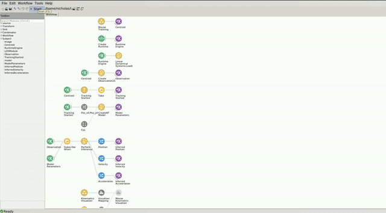

Foraging Mouse Example
The code for this repo can be found here.
In the following example, you can find how the Kalman Filter can be used to infer the kinematics of a mouse behaving in a foraging arena.
Dependencies
If you used the bootstrapping method, you dont have to worry about the package dependencies, as these should be already installed. However, if creating a new environment or integrating into an existing one, you will need to install the following packages:
- Bonsai - Core v2.8.1
- Bonsai - Design v2.8.0
- Bonsai - Editor v2.8.0
- Bonsai - ML v0.1.0
- Bonsai - ML LinearDynamicalSystems v0.1.0
- Bonsai - ML Visualizers v0.1.0
- Bonsai - Scripting v2.8.0
- Bonsai - Scripting Python v0.2.0
- Bonsai - Vision v2.8.1
- Bonsai - Vision Design v2.8.1
Dataset
The video for this example was generously provided by the Sainsbury Wellcome Centre Foraging Behaviour Working Group. (2023). Aeon: An open-source platform to study the neural basis of ethological behaviours over naturalistic timescales, https://doi.org/10.5281/zenodo.8413142
You can download the ForagingMouseExampleVid.avi video file here: https://doi.org/10.5281/zenodo.10629221. The workflow expects the video to be placed into the datasets folder but if you prefer to keep the video elsewhere, simply change the Filename property of the MouseTracking group node to point to the correct location.
Workflow
Below is the workflow for inferring kinematics of a mouse during a foraging task.
In this example, a Kalman Filter is used to infer the position, velocity, and acceleration of the freely moving mouse. The frames per second of the video is 50 Hz, so we set the Fps property of the CreateKFModel node to 50. The workflow performs centroid tracking inside of the MouseTracking group node, which uses a standard image analysis pipeline to extract the Centroid of the animal. The Centroid data is then converted into a type of Observation2D that the model then uses to perform inference using the PerformInference node.
Since the tracking pipeline takes some time to initialize, we wait to create the kalman filter using the SubscribeWhen node only once TrackingStarted has produced a value, which is conditioned on centroid != NaN.
To visualize the inferred position, velocity, and acceleration kinematics, the MouseKinematicsVisualizer node positioned at the bottom of the workflow can be openned while the workflow is running. On the left, you should see the inferred position, velocity and acceleration (top to bottom), with the ability to select which state component (X or Y) you want to visualize from the dropdown menu on the top right corner of the graph. Both the mean (dark blue) and variance (light blue shading) of the inferred state component are visualized. On the right, you should see the video playing with the tracking data (blue) and inferred position (red) overlaid.
The workflow should look like this:
